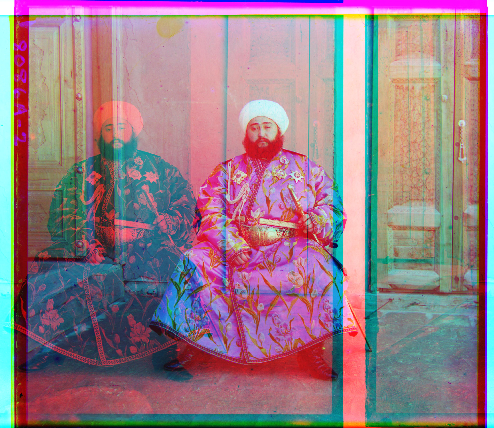
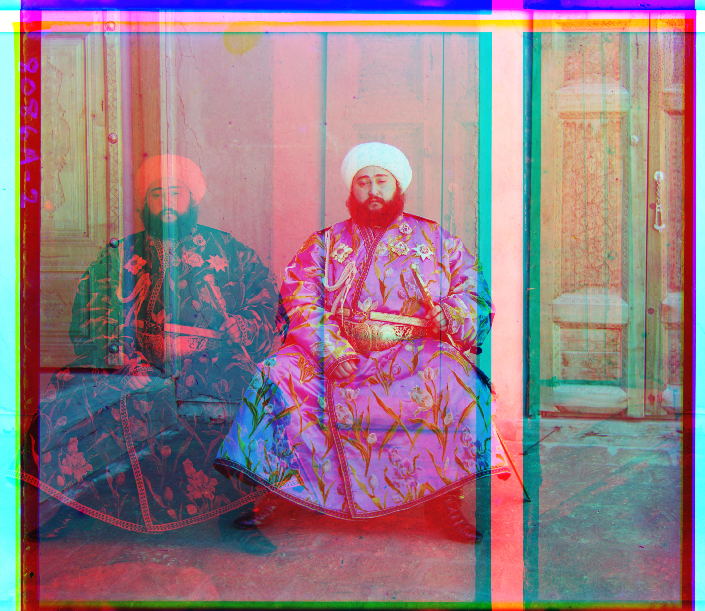
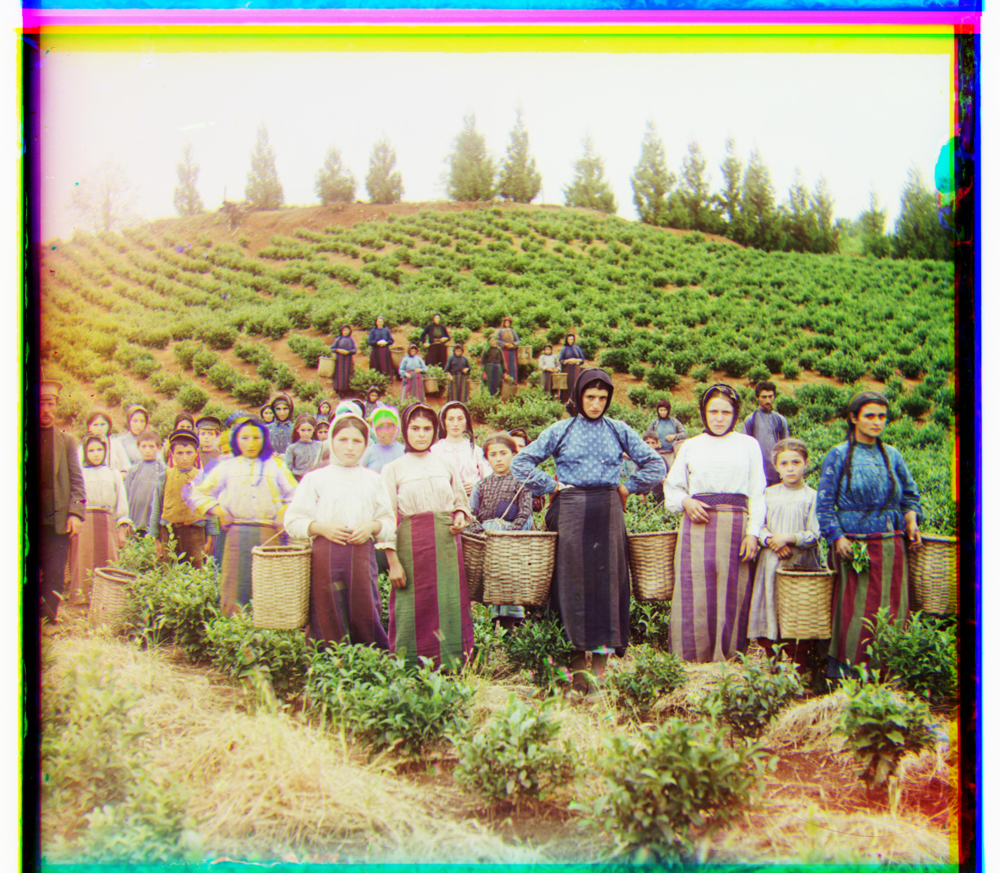
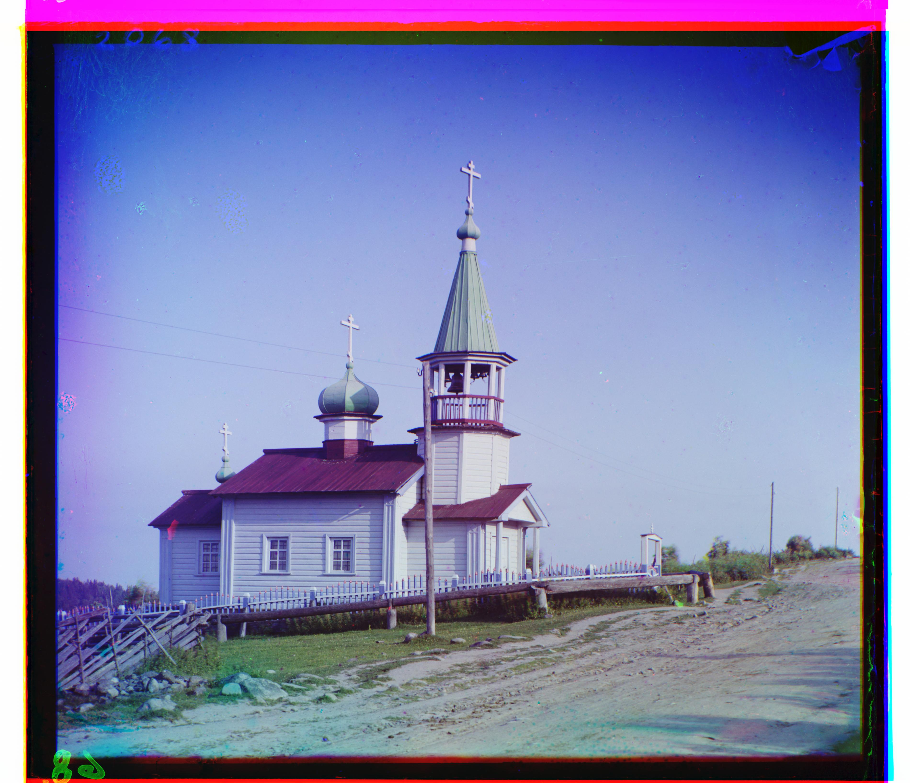
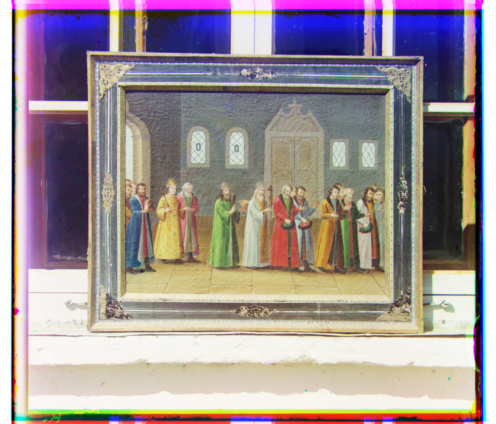
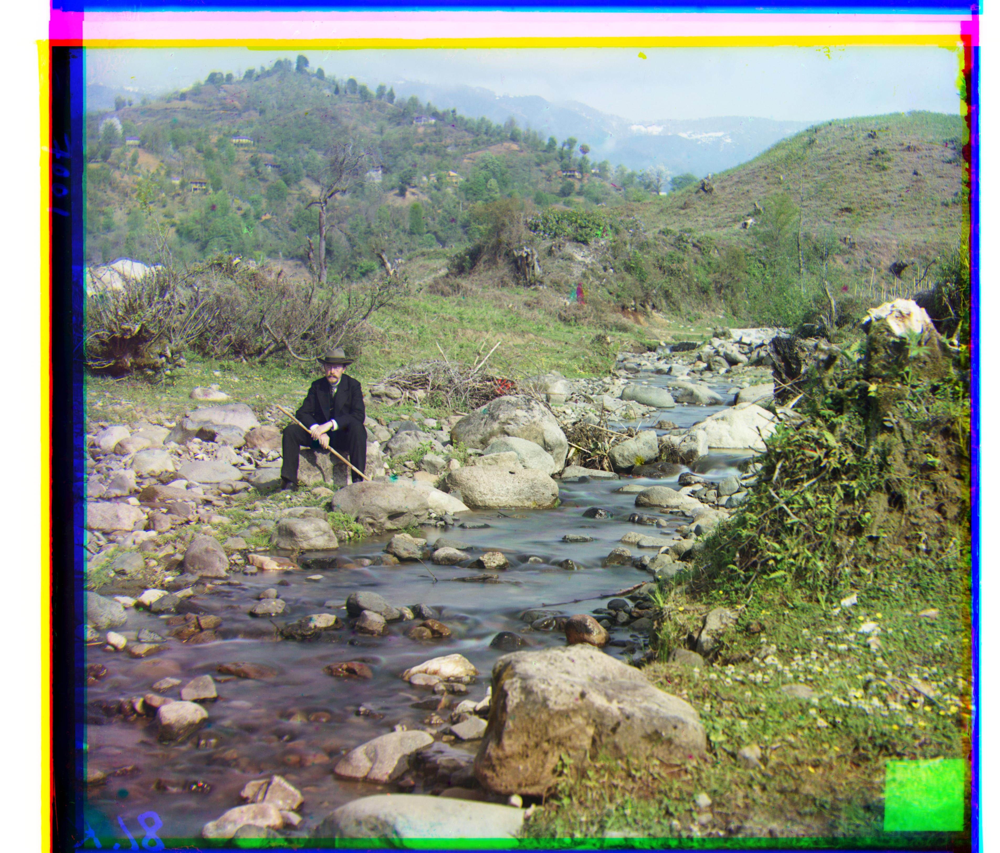
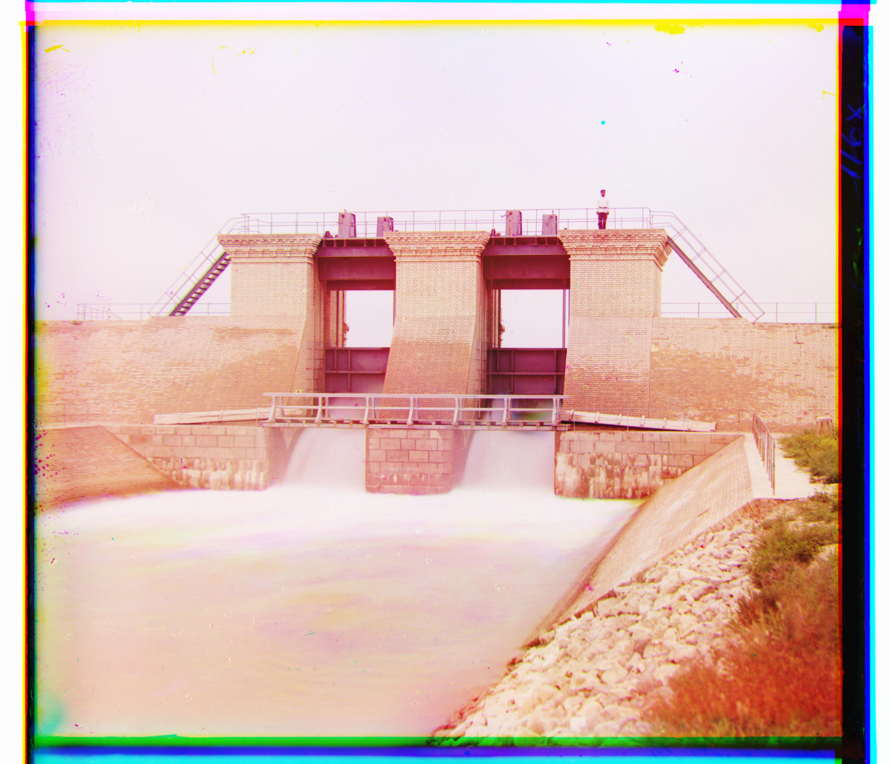
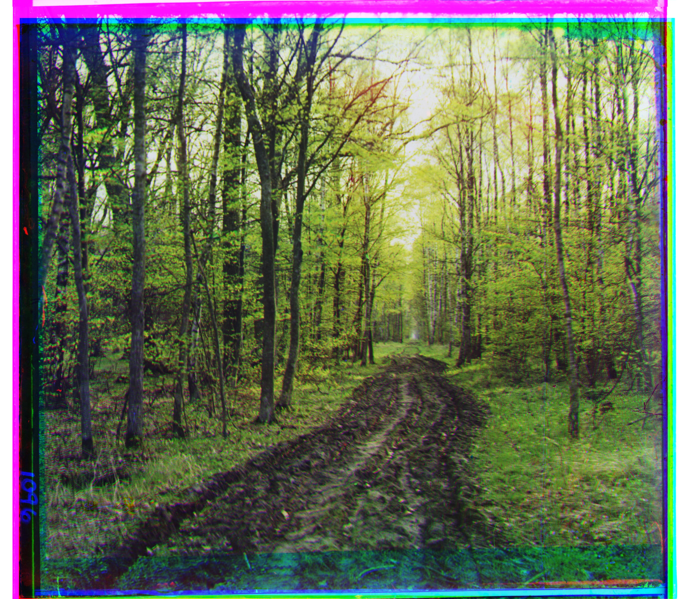
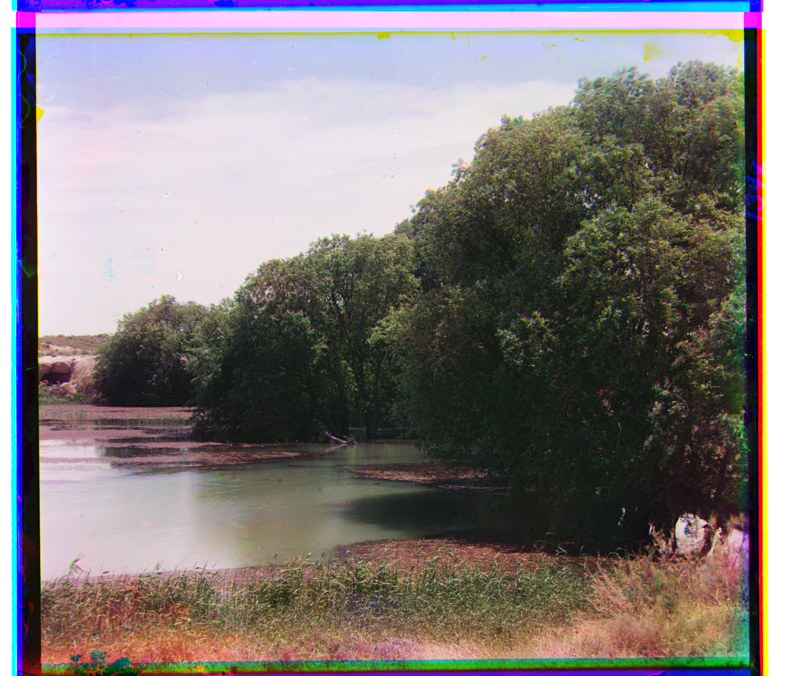

Project 1: Images of the Russian Empire
Colorizing the Prokudin-Gorskii photo collection


Before color photography was a real thing, Sergei Mikhailovich Prokudin-Gorskii set out to photograph thousands of hypothetical color pictures across the Russian Empire. To do this, he took three exposures of every picture: each one under either a red, blue, or green filter. Now in the present day, we're finally able to colorize Prokudin-Gorskii's collection by overlaying the exposures! Instead of overlaying them by hand, however, we'll be doing it programmatically using NumPy and scikit-image. Let's get started!
Single-Scale Alignment
Let's first run a single-scale alignment on some low-resolution images. This approach takes a square window of possible displacements for the green and red channels (keeping the blue fixed) and picks the displacements that minimize the error according to the error metric we choose. In this case, we'll be using a window ranging from -15 to 15 pixels along each axis, and we'll use the L2 norm as well as Normalized Cross-Correlation (NCC) to pick the best alignment (the one with the smallest error).


The original, unsplit images


The combined, unaligned images
G: (5, 2), R: (12, 3)

G: (-3, 2), R: (3, 2)

G: (3, 3), R: (6, 3)
The images aligned using L2 norm and NCC (both methods give identical results)
The L2 norm is simply the norm of the difference between two images: pixels that are closer in intensity result in a smaller norm. NCC is different in that it takes two mean-subtracted, normalized images and computes the dot product between them: Pixels that deviate from the mean in the same direction contribute to a larger NCC. Note that if our goal is to minimize error, the NCC should be negated in our error calculation (since higher correlation is ideal). We should also calculate the error on inner pixels depicting just the photo, not including the borders (which could introduce noise into our metric). This can be done by simply cropping the borders (such as the outer 10%).
Multi-Scale Alignment
Single-scale alignment works for small images, but larger images (which would require a larger window) take too long with this technique. Instead, we'll use an image pyramid for larger images, which estimates the alignment on downscaled images and scales up that estimate until we get back to the full image. We apply the fixed alignment window on each step to update our estimate. Note that for multi-scale alignment, we can keep our original window size since the displacement will get scaled up as we scale the images back up. We'll also use a scaling factor of 2.
And as a precaution, we'll set the minimum pyramid size to twice our window size divided by the portion of the image that isn't designated as the border. This ensures that we won't get absurdly large displacements that result from the image "looping" around during each iteration.
Here's the gallery of the multi-scale aligned example images:

L2 and NCC (same). G: (5, 2), R: (12, 3)

L2 and NCC (same). G: (25, 4), R: (58, -4)

L2. G: (49, 24), R: (114, -1049)

NCC. G: (49, 24), R: (169, -1041)
This photo of the Emir of Bukhara isn't aligned using our error metrics since we're only comparing pixel intensities. Because his outfit is extremely blue, the intensities across channels vary widely in that area, inflating the error if the image were properly aligned. We'd ideally use edge detection to align the channels by their edges instead.
L2. G: (60, 16), R: (124, 13)

L2. G: (60, 17), R: (124, 13)
L2 and NCC (same). G: (41, 17), R: (89, 23)

L2. G: (39, 7), R: (129, 11)

NCC. G: (40, 7), R: (130, 11)

L2. G: (82, 11), R: (178, 13)

NCC. G: (82, 10), R: (178, 13)

L2 and NCC (same). G: (-3, 2), R: (3, 2)

L2 and NCC (same). G: (28, 3), R: (68, 7)

L2 and NCC (same). G: (79, 29), R: (176, 36)

L2 and NCC (same). G: (49, -6), R: (96, -25)

L2 and NCC (same). G: (53, 14), R: (112, 11)

L2 and NCC (same). G: (3, 3), R: (6, 3)

L2 and NCC (same). G: (15, -7), R: (83, -16)
And here are the multi-scale results of three images I picked:

L2 and NCC (same). G: (47, 15), R: (108, 28)

L2. G: (36, -32), R: (97, 7)
NCC. G: (37, -33), R: (97, 6)

L2 and NCC (same). G: (57, -31), R: (131, -60)
And just like that, we now have a colorized set of images to be in awe!